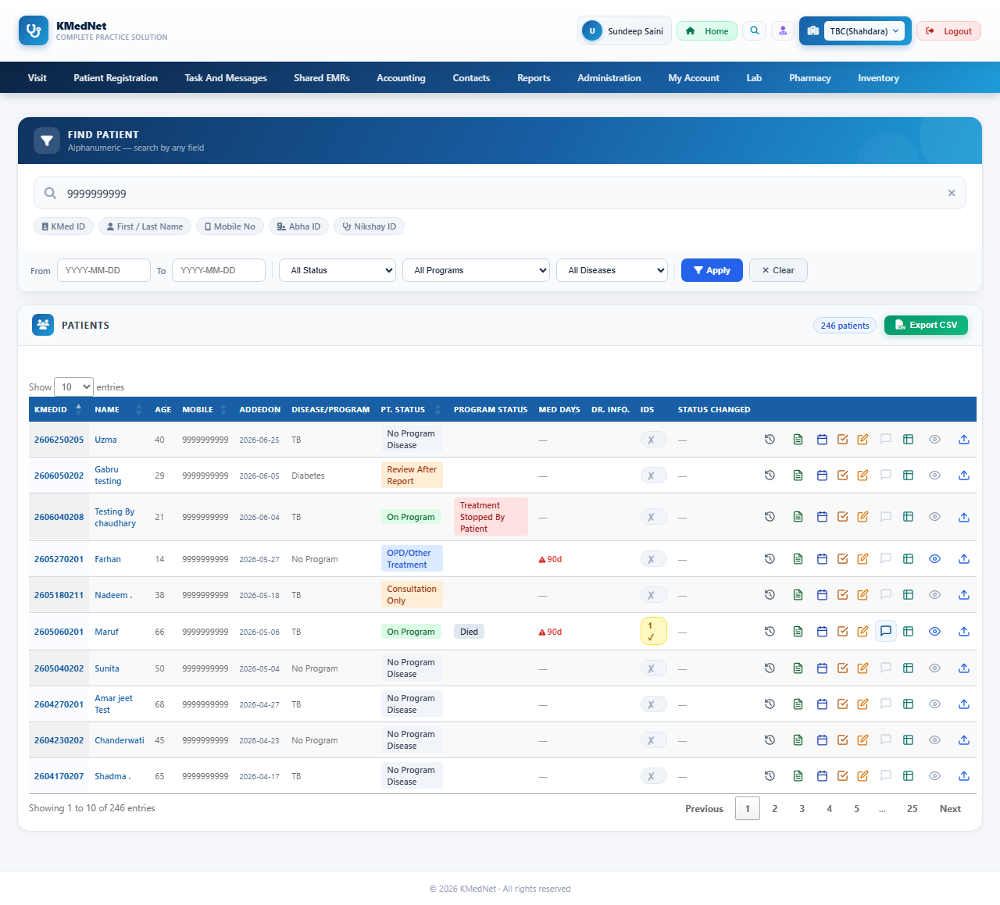
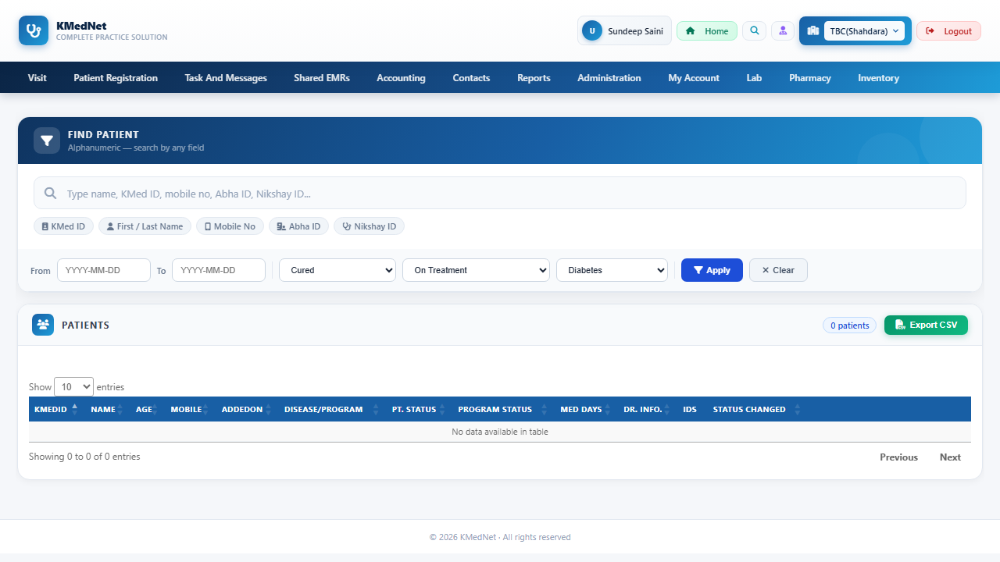

Total25
App defect2
Passed23
App defect The app did not do what its own validators/code say it should. Investigate the application.
Generation notes (24)
- Rejected suggestion: "Positive case: Valid date input" - step 1: 'filterFromDate' is disabled/read-only; (model was asked to fix this; see accepted scenarios for its replacement)
- Rejected suggestion: "Negative case: Invalid date format" - step 1: 'filterFromDate' is disabled/read-only; (model was asked to fix this; see accepted scenarios for its replacement)
- Rejected suggestion: "Boundary case: Empty date input" - step 1: 'filterFromDate' is disabled/read-only; (model was asked to fix this; see accepted scenarios for its replacement)
- Rejected suggestion: "Boundary case: Date input with maximum length" - step 1: 'filterFromDate' is disabled/read-only; (model was asked to fix this; see accepted scenarios for its replacement)
- Rejected suggestion: "Enter valid date in 'filterToDate'" - step 1: 'filterToDate' is disabled/read-only; (model was asked to fix this; see accepted scenarios for its replacement)
- Rejected suggestion: "Enter invalid date format in 'filterToDate'" - step 1: 'filterToDate' is disabled/read-only; (model was asked to fix this; see accepted scenarios for its replacement)
- Rejected suggestion: "Enter empty value in 'filterToDate'" - step 1: 'filterToDate' is disabled/read-only; (model was asked to fix this; see accepted scenarios for its replacement)
- Rejected suggestion: "Enter maximum length date in 'filterToDate'" - step 1: 'filterToDate' is disabled/read-only; (model was asked to fix this; see accepted scenarios for its replacement)
- TC_NEWS_024: no provable expected result - runs as a smoke test (no crash / server error)
- TC_NEWS_026: no provable expected result - runs as a smoke test (no crash / server error)
- TC_NEWS_027: no provable expected result - runs as a smoke test (no crash / server error)
- TC_NEWS_028: no provable expected result - runs as a smoke test (no crash / server error)
- TC_NEWS_030: no provable expected result - runs as a smoke test (no crash / server error)
- TC_NEWS_032: no provable expected result - runs as a smoke test (no crash / server error)
- TC_NEWS_033: no provable expected result - runs as a smoke test (no crash / server error)
- TC_NEWS_034: no provable expected result - runs as a smoke test (no crash / server error)
- TC_NEWS_035: no provable expected result - runs as a smoke test (no crash / server error)
- TC_NEWS_036: no provable expected result - runs as a smoke test (no crash / server error)
- TC_NEWS_037: no provable expected result - runs as a smoke test (no crash / server error)
- TC_NEWS_038: dropped expectation: message 'ON PROGRAM' is already visible before the test acts, so it proves nothing
- TC_NEWS_038: no provable expected result - runs as a smoke test (no crash / server error)
- TC_NEWS_039: no provable expected result - runs as a smoke test (no crash / server error)
- TC_NEWS_040: dropped expectation: message 'REVIEW AFTER REPORT' is already visible before the test acts, so it proves nothing
- TC_NEWS_040: no provable expected result - runs as a smoke test (no crash / server error)
| ID | Scenario | Result | Reason | Time |
|---|---|---|---|---|
TC_NEWS_025 | Search with invalid KMed ID negative | App defect | Expected the message 'Unable to identify this patient/prospect. Please refresh the page and try again.' but it never appeared. | 6.44s |
Expected: message 'Unable to identify this patient/prospect. Please refresh the page and try again.' appears; no server error Why this is expected: Invalid input for txtSearch Steps:
test_library/epr_newsearchpatient/20261103_143652_full_page/test_epr_newsearchpatient_20261103_143652.py::test_TC_NEWS_025[chromium]  | ||||
TC_NEWS_029 | Negative case: Invalid filter combination negative | App defect | Expected the message 'Unable to identify this patient/prospect. Please refresh the page and try again.' but it never appeared. | 14.16s |
Expected: message 'Unable to identify this patient/prospect. Please refresh the page and try again.' appears; no server error Why this is expected: Invalid combination of filter options Steps:
test_library/epr_newsearchpatient/20261103_143652_full_page/test_epr_newsearchpatient_20261103_143652.py::test_TC_NEWS_029[chromium]  | ||||
TC_NEWS_024 | Search with valid KMed ID smoke | Passed | — | 1.2s |
Expected: no server error Why this is expected: Valid input for txtSearch Steps:
test_library/epr_newsearchpatient/20261103_143652_full_page/test_epr_newsearchpatient_20261103_143652.py::test_TC_NEWS_024[chromium] | ||||
TC_NEWS_026 | Search with valid mobile number smoke | Passed | — | 1.2s |
Expected: no server error Why this is expected: Valid input for txtSearch Steps:
test_library/epr_newsearchpatient/20261103_143652_full_page/test_epr_newsearchpatient_20261103_143652.py::test_TC_NEWS_026[chromium] | ||||
TC_NEWS_027 | Search with empty input smoke | Passed | — | 1.26s |
Expected: no server error Why this is expected: Empty input for txtSearch Steps:
test_library/epr_newsearchpatient/20261103_143652_full_page/test_epr_newsearchpatient_20261103_143652.py::test_TC_NEWS_027[chromium] | ||||
TC_NEWS_028 | Positive case: Valid filter selection smoke | Passed | — | 2.86s |
Expected: no server error Why this is expected: Valid selection of filter options Steps:
test_library/epr_newsearchpatient/20261103_143652_full_page/test_epr_newsearchpatient_20261103_143652.py::test_TC_NEWS_028[chromium] | ||||
TC_NEWS_030 | Boundary case: Maximum entries selection smoke | Passed | — | 2.21s |
Expected: no server error Why this is expected: Maximum entries selection in dropdown Steps:
test_library/epr_newsearchpatient/20261103_143652_full_page/test_epr_newsearchpatient_20261103_143652.py::test_TC_NEWS_030[chromium] | ||||
TC_NEWS_031 | UI case: Clear filter ui | Passed | — | 20.76s |
Expected: 'All Status On Program Cured Review After Report OPD/Other Treatment Consultation' = 'All Status'; 'All Programs On Treatment Treatment Interrupted Treatment Stopped By Patient Tre' = 'All Programs'; 'All Diseases TB TB with Diabetes Diabetes No Program Follow-Up(TB) NGO TB TB Sup' = 'All Diseases'; no server error Why this is expected: Clear filter button functionality Steps:
test_library/epr_newsearchpatient/20261103_143652_full_page/test_epr_newsearchpatient_20261103_143652.py::test_TC_NEWS_031[chromium] | ||||
TC_NEWS_032 | Select 'On Program' status and apply filter smoke | Passed | — | 9.29s |
Expected: no server error Why this is expected: Valid selection of filterStatus Steps:
test_library/epr_newsearchpatient/20261103_143652_full_page/test_epr_newsearchpatient_20261103_143652.py::test_TC_NEWS_032[chromium] | ||||
TC_NEWS_033 | Select 'All Programs' and apply filter smoke | Passed | — | 5.99s |
Expected: no server error Why this is expected: Valid selection of filterProgram Steps:
test_library/epr_newsearchpatient/20261103_143652_full_page/test_epr_newsearchpatient_20261103_143652.py::test_TC_NEWS_033[chromium] | ||||
TC_NEWS_034 | Select 'TB' disease and apply filter smoke | Passed | — | 6.17s |
Expected: no server error Why this is expected: Valid selection of filterDisease Steps:
test_library/epr_newsearchpatient/20261103_143652_full_page/test_epr_newsearchpatient_20261103_143652.py::test_TC_NEWS_034[chromium] | ||||
TC_NEWS_035 | Select 'Consultation Only' status and apply filter smoke | Passed | — | 3.36s |
Expected: no server error Why this is expected: Valid selection of filterStatus Steps:
test_library/epr_newsearchpatient/20261103_143652_full_page/test_epr_newsearchpatient_20261103_143652.py::test_TC_NEWS_035[chromium] | ||||
TC_NEWS_036 | Select 'Died' program and apply filter smoke | Passed | — | 4.14s |
Expected: no server error Why this is expected: Valid selection of filterProgram Steps:
test_library/epr_newsearchpatient/20261103_143652_full_page/test_epr_newsearchpatient_20261103_143652.py::test_TC_NEWS_036[chromium] | ||||
TC_NEWS_037 | Select 'All Status' from filterStatus dropdown smoke | Passed | — | 2.87s |
Expected: no server error Why this is expected: filterStatus element with 'All Status' option Steps:
test_library/epr_newsearchpatient/20261103_143652_full_page/test_epr_newsearchpatient_20261103_143652.py::test_TC_NEWS_037[chromium] | ||||
TC_NEWS_038 | Select 'On Program' from filterStatus dropdown smoke | Passed | — | 5.27s |
Expected: no server error Why this is expected: filterStatus element with 'On Program' option Steps:
test_library/epr_newsearchpatient/20261103_143652_full_page/test_epr_newsearchpatient_20261103_143652.py::test_TC_NEWS_038[chromium] | ||||
TC_NEWS_039 | Select 'Cured' from filterStatus dropdown smoke | Passed | — | 7.62s |
Expected: no server error Why this is expected: filterStatus element with 'Cured' option Steps:
test_library/epr_newsearchpatient/20261103_143652_full_page/test_epr_newsearchpatient_20261103_143652.py::test_TC_NEWS_039[chromium] | ||||
TC_NEWS_040 | Select 'Review After Report' from filterStatus dropdown smoke | Passed | — | 6.63s |
Expected: no server error Why this is expected: filterStatus element with 'Review After Report' option Steps:
test_library/epr_newsearchpatient/20261103_143652_full_page/test_epr_newsearchpatient_20261103_143652.py::test_TC_NEWS_040[chromium] | ||||
TC_NEWS_041 | Select 'All Programs' from filterProgram dropdown positive | Passed | — | 4.39s |
Expected: 'All Programs On Treatment Treatment Interrupted Treatment Stopped By Patient Tre' = 'All Programs'; no server error Why this is expected: element_value reflects the selected option Steps:
test_library/epr_newsearchpatient/20261103_143652_full_page/test_epr_newsearchpatient_20261103_143652.py::test_TC_NEWS_041[chromium] | ||||
TC_NEWS_042 | Select 'On Treatment' from filterProgram dropdown positive | Passed | — | 2.13s |
Expected: 'All Programs On Treatment Treatment Interrupted Treatment Stopped By Patient Tre' = 'On Treatment'; no server error Why this is expected: element_value reflects the selected option Steps:
test_library/epr_newsearchpatient/20261103_143652_full_page/test_epr_newsearchpatient_20261103_143652.py::test_TC_NEWS_042[chromium] | ||||
TC_NEWS_043 | Select 'Treatment Interrupted' from filterProgram dropdown positive | Passed | — | 3.32s |
Expected: 'All Programs On Treatment Treatment Interrupted Treatment Stopped By Patient Tre' = 'Treatment Interrupted'; no server error Why this is expected: element_value reflects the selected option Steps:
test_library/epr_newsearchpatient/20261103_143652_full_page/test_epr_newsearchpatient_20261103_143652.py::test_TC_NEWS_043[chromium] | ||||
TC_NEWS_044 | Select 'Died' from filterProgram dropdown positive | Passed | — | 5.22s |
Expected: 'All Programs On Treatment Treatment Interrupted Treatment Stopped By Patient Tre' = 'Died'; no server error Why this is expected: element_value reflects the selected option Steps:
test_library/epr_newsearchpatient/20261103_143652_full_page/test_epr_newsearchpatient_20261103_143652.py::test_TC_NEWS_044[chromium] | ||||
TC_NEWS_045 | Select 'All Diseases' from filterDisease dropdown positive | Passed | — | 4.57s |
Expected: 'All Diseases TB TB with Diabetes Diabetes No Program Follow-Up(TB) NGO TB TB Sup' = 'All Diseases'; no server error Why this is expected: element_value on filterDisease Steps:
test_library/epr_newsearchpatient/20261103_143652_full_page/test_epr_newsearchpatient_20261103_143652.py::test_TC_NEWS_045[chromium] | ||||
TC_NEWS_046 | Select 'TB with Diabetes' from filterDisease dropdown positive | Passed | — | 3.87s |
Expected: 'All Diseases TB TB with Diabetes Diabetes No Program Follow-Up(TB) NGO TB TB Sup' = 'TB with Diabetes'; no server error Why this is expected: element_value on filterDisease Steps:
test_library/epr_newsearchpatient/20261103_143652_full_page/test_epr_newsearchpatient_20261103_143652.py::test_TC_NEWS_046[chromium] | ||||
TC_NEWS_047 | Select 'Diabetes' from filterDisease dropdown positive | Passed | — | 3.22s |
Expected: 'All Diseases TB TB with Diabetes Diabetes No Program Follow-Up(TB) NGO TB TB Sup' = 'Diabetes'; no server error Why this is expected: element_value on filterDisease Steps:
test_library/epr_newsearchpatient/20261103_143652_full_page/test_epr_newsearchpatient_20261103_143652.py::test_TC_NEWS_047[chromium] | ||||
TC_NEWS_048 | Select 'No Program' from filterDisease dropdown positive | Passed | — | 3.31s |
Expected: 'All Diseases TB TB with Diabetes Diabetes No Program Follow-Up(TB) NGO TB TB Sup' = 'No Program'; no server error Why this is expected: element_value on filterDisease Steps:
test_library/epr_newsearchpatient/20261103_143652_full_page/test_epr_newsearchpatient_20261103_143652.py::test_TC_NEWS_048[chromium] | ||||